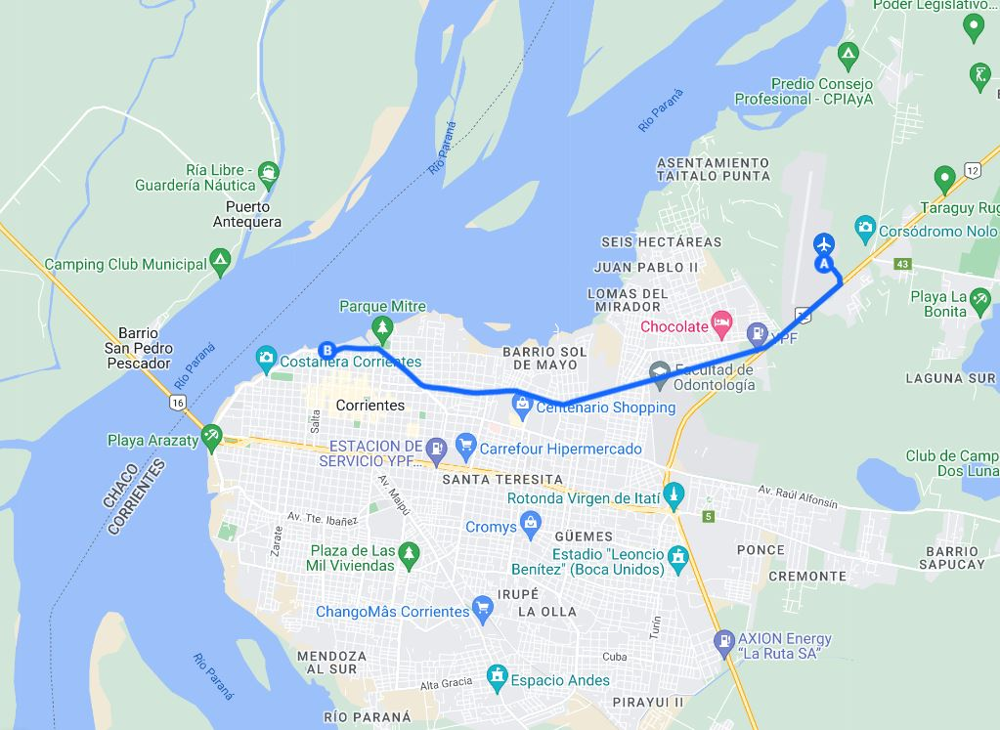
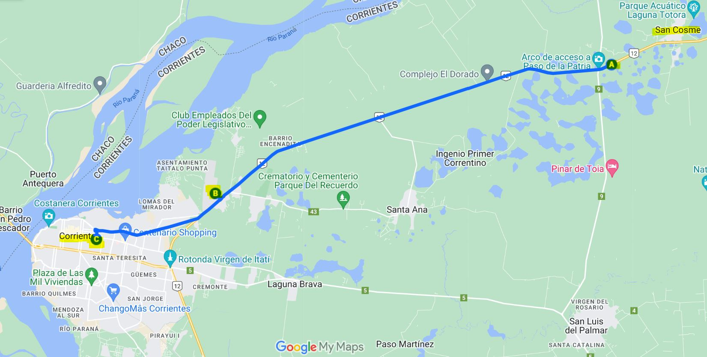
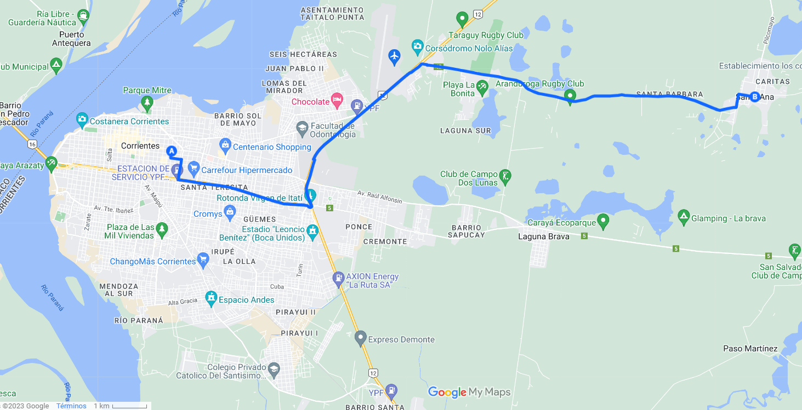

Casamiento Agus y Meli
¿Cómo llegar?
Actualizado el 22-03-2023
1 ¿Qué vas a encontrar acá?
Acá te resumimos toda la data que pasó Paula Porta sobre los distintos recorridos que podes llegar a necesitar hacer durante el finde
Son 3:
Tramo 1: Aeropuerto Corrientes - Corrientes Capital (Puerto)
Tramo 2: San Cosme (after) - Corrientes Capital
Tramo 3: Corrientes Capital (Puerto) - Santa Ana (quinta domingo)
1.1 Tramo 1
Este tramo posiblemente lo tengas que hacer el día que llegues a Corrientes con tu vuelo.
A - Punto Inicial: Aeropuerto CorrientesB - Punto Final: Corrientes Capital (Puerto)
El puerto es una especie de punto de transbordo donde pasan muchas lineas de colectivo
*También puede servirte para volver, en ese caso es el mismo recorrido a la inversa.

Si hacés click acá te lleva al mapa interactivo con el recorrido indicado
En este link vas a una carpeta de drive con todos los horarios para ese recorrido
1.2 Tramo 2
Este es el segundo tramo que posiblemente tengas que hacer, para volver desde el after que será en San Cosme (casa de Pau) hacia Corrientes Capital.
En el camino podés bajarte en el aeropuerto de Corrientes, en caso de que tu vuelo salga el domingo. O sea, te sirve también para ir al aeropuerto post after.
A - Punto Inicial: San Cosme (after)B - Punto Intermedio (opcional): Aeropuerto CorrientesC - Punto Final: Corrientes Capital (Puerto)

Si hacés click acá te lleva al mapa interactivo con el recorrido indicado
En este link vas a una carpeta de drive con todos los horarios para ese recorrido y los contactos para reservar las combis
Algo muy importante, la casa de Pau queda muy cerca de Paso de la Patría, otra localidad a lado, entonces el punto inical puede ser San Cosme o Paso de la Patria, cualquiera está ok. En el drive vas a encontrar estas opciones también :)
Aclaraciones útiles:
Para viajar en cualquier horario de combi de cualquier empresa y de cualquiera de los dos pueblos (San Cosme o Paso de la Patria) SI O SI hay que RESERVAR LUGAR CON UN MÍNIMO DE 24HS DE ANTICIPACIÓN . Para el colectivo NO se reserva lugar.
1.3 Tramo 3
En caso de que vayas a la quinta que alquilaron las novias el domingo, vas a necesitar hacer este tramo, si estás en Corrientes o para volver desde la quinta a Corrientes cuando se termine la cosa.
A - Punto Inicial: Corrientes Capital (Puerto)B - Punto Final: Santa Ana - (quinta Agus y Meli)

Si hacés click acá te lleva al mapa interactivo con el recorrido indicado
En este link vas a una carpeta de drive con todos los horarios para ese recorrido
Aclaraciones útiles:
*Empresa ERSA , el pasaje cuesta $290 se puede abonar por Mercado Pago o Efectivo
*En la segunda imagen (la que tiene un carpinchito) vas a encontrar a la Empresa ERSA “Línea 109” mas la empresa SANTA ANA “Línea 11”. El colectivo 11 se abona ÚNICAMENTE EN EFECTIVO.
*Donde dice “Ingenio” se refiere un paraje rural de Santa Ana.
1.4 Adicional
Si tenés horarios de vuelo y querés buscar amigues que lleguen o partan en horarios cercanos para ponerse de acuerdo, en este link está una grilla con todos los horarios de quienes vamos. Tal vez puedas ponerte de acuerdo y coordinar y… quien sabe… tal vez conocer al amor de tu vida…